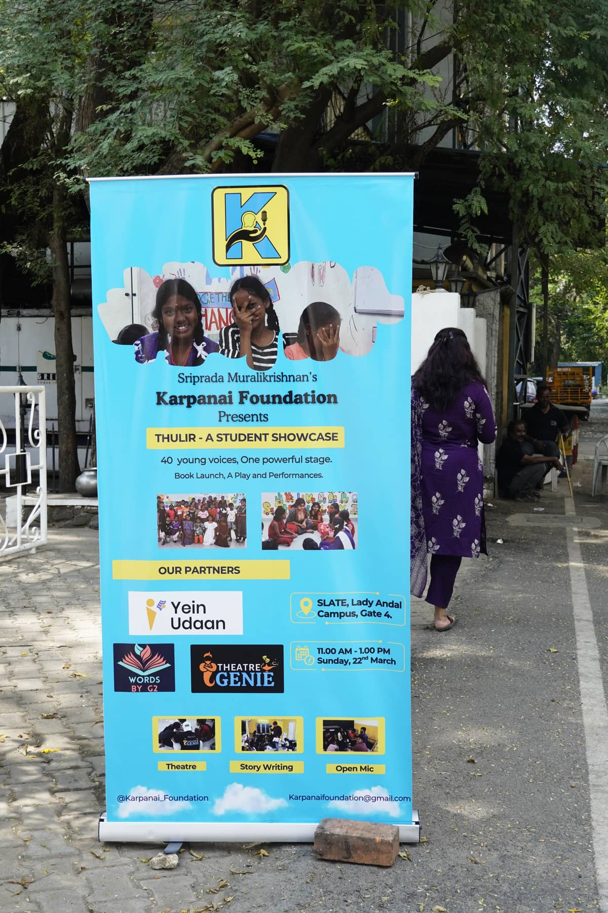
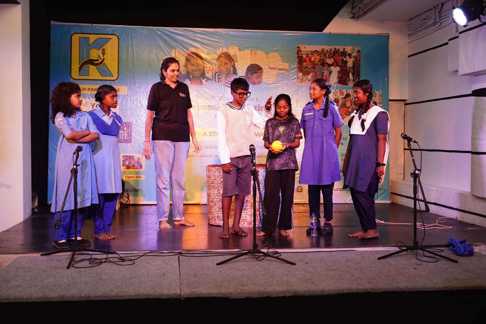
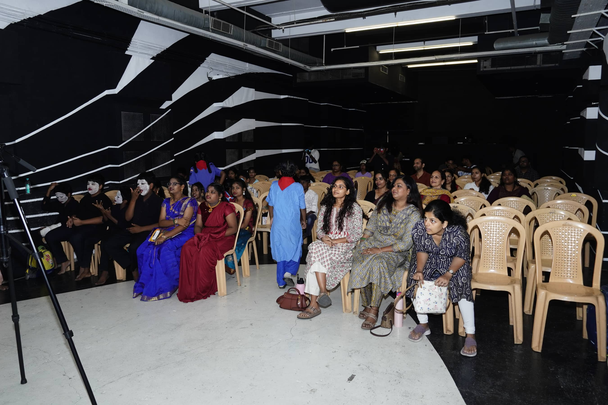

🎤 Student showcase
Thulir - Student Showcase
Learning deserves an audience.
Thulir creates a public platform where students can share what they have learned and created. The showcase brings together:
🎭 Theatre
🎤 Open Mic
📚 Book Launches
🎨 Creative Expression
💬 Student Voices
Parents, educators, community members and audiences get to witness something important: children are not just receiving knowledge. They are creating it.

40 young voices, one powerful stage
⤢

Mid-performance, in front of a real audience
⤢

Theatre, without saying a word
⤢

Backstage, getting into character
⤢

The audience that showed up
⤢

The whole crew, medals and all
⤢